What it looks like
Nothing here is a generic lesson. Every mission, every word and the difficulty itself come out of what you personally said in the last conversation — which is what makes it a loop rather than a course, and what moves your level.
Your level
A1→A2→B1→B2→C1
Every lap round moves it up, and the next conversation is pitched there.
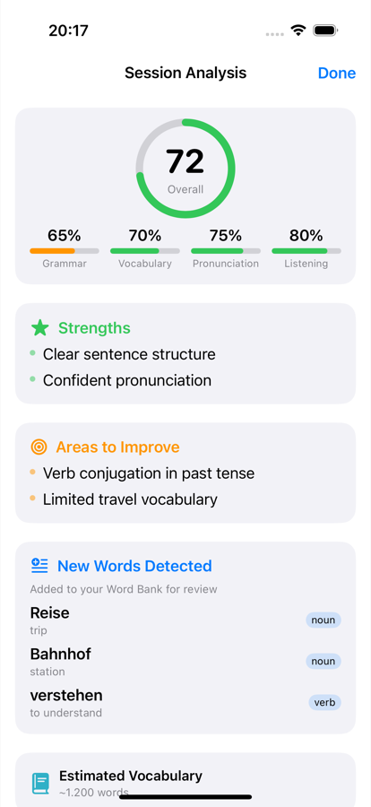
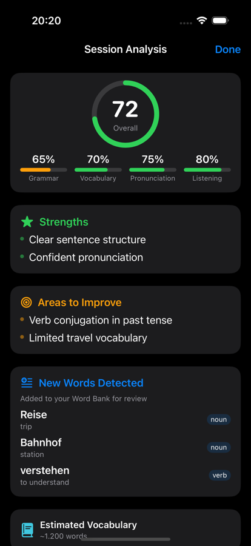
2 It finds the gaps
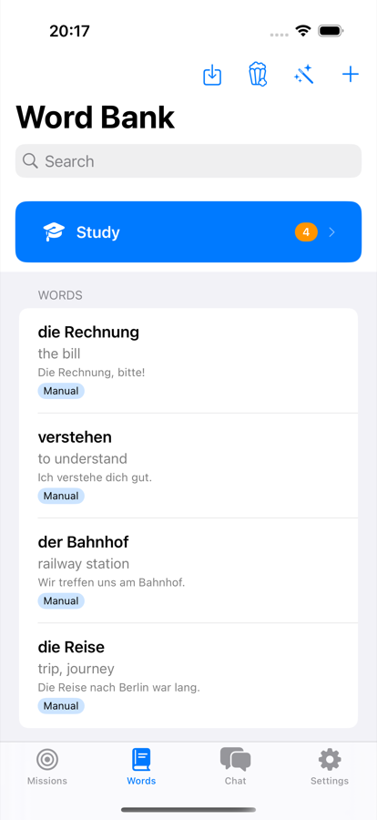
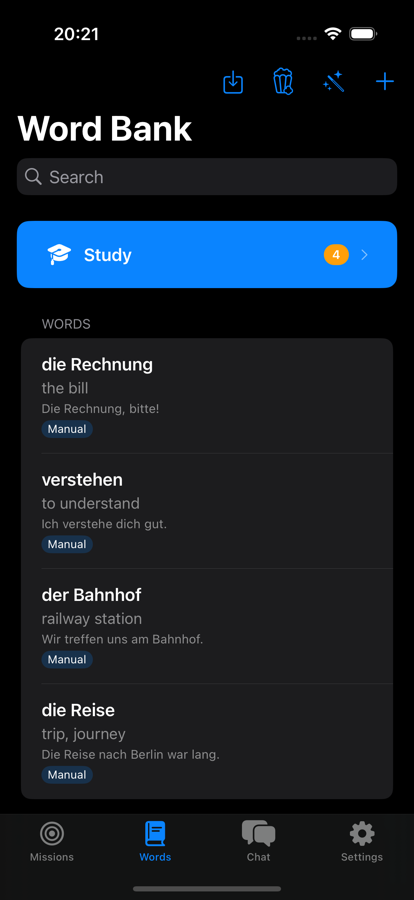
3 You add your own
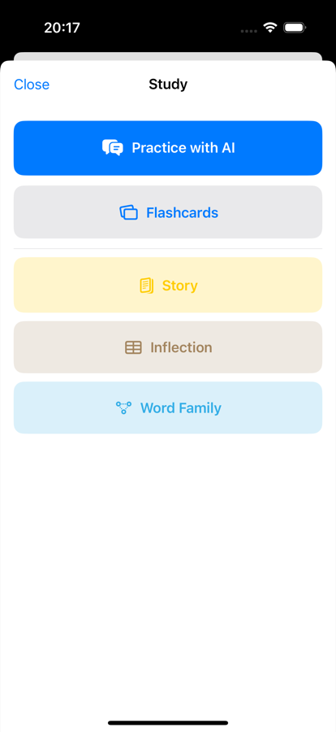
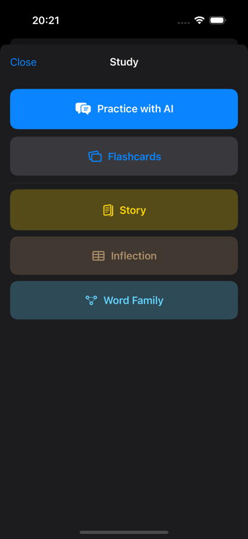
4 You learn them
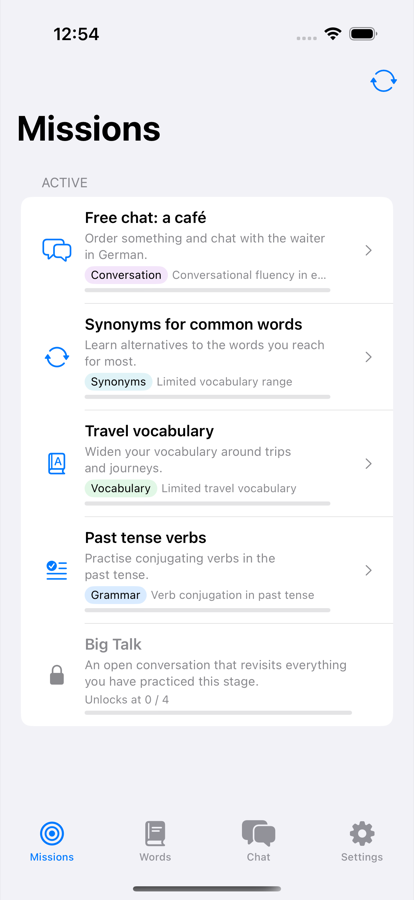
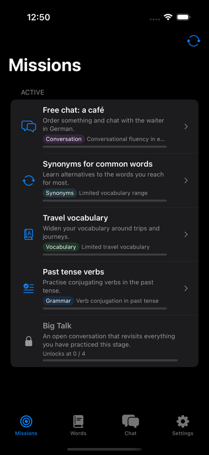
5 You clear the missions
Talking to it
-
Real-time voice
A spoken conversation over OpenAI Realtime or Gemini Live, not a recording you submit. Cut in mid-sentence and it stops talking, the way a person would.
-
Or type instead
The same tutor in text mode, switchable inside a session. Handy on a train, or when you'd rather not talk out loud.
-
An avatar that reacts
It lip-syncs to whatever is being said and shifts expression with the mood of the conversation — listening, thinking, pleased, unimpressed.
-
Subtitles, if you want them
Live captions of what the tutor just said, toggled per session. Off by default so you have to listen first.
-
Tap any word for seven things
Translate, hear it spoken, see examples, break down the sentence structure, get the grammar rule, ask a follow-up question, or save it to your deck.
-
It waits, then nudges
Go quiet and a countdown appears rather than the tutor talking over you — extend it if you're still thinking. A small strip shows how many exchanges are left before the report has enough to work with.
-
Every lookup is kept
Everything you asked about mid-conversation lands in a list you can reopen later, answers and all — so a word you looked up last week isn't lost.
-
Switch language mid-session
Learning two things at once? Change which one you're practising from the toolbar without ending the conversation.
Six session types: free conversation, level assessment, word recall, grammar focus, mission practice and mission refresh.
How it decides what you practise
-
Your level, from a conversation
The first session is a chat, not a multiple-choice test. It settles on a CEFR level from A0 to C2 — with sub-levels — and adapts how it speaks to you from then on.
-
Missions from your own mistakes
Ten kinds — grammar, vocabulary, synonyms, pronunciation, conversation, cross-language parallels, verb matrix, story, inflection and word-family drills — generated from what you actually got wrong.
-
Stages, and a Big Talk
Four practice missions unlock a longer open conversation that revisits everything from that stage. Fail it and the stage re-locks until you've redone the retry missions.
-
Two ways to progress
Adaptive follows your weak spots. Structural works through a 30-verb grid across three tenses and six persons, filling in cells as you master them.
-
Reading, not just talking
Story missions give you an AI-written passage at your level with the same tap-to-look-up actions as live chat, then a few comprehension questions.
-
Your own tutor prompt
Not happy with how it teaches? Replace the system prompt with your own text and the tutor follows that instead.
-
Pick the tutor's manner
It changes the wording, the patience, how bluntly mistakes get called out — and even the tone of your practice reminders, which come in fifteen variants per style.
-
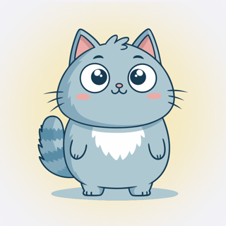
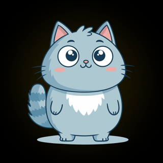
Friendly
Encouraging, lets small slips go.
-
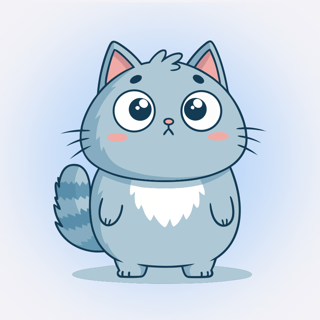
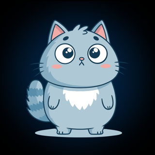
Strict
All business — corrects everything, praises little.
-
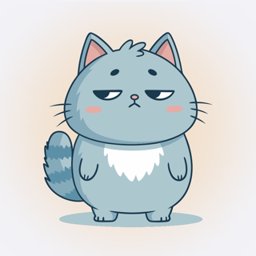
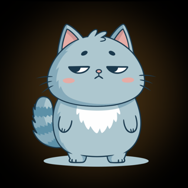
Sarcastic
Half-lidded, and enjoys your mistakes a little.
-
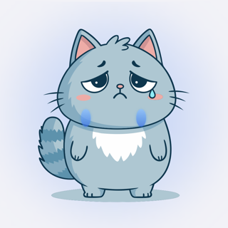
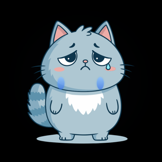
Drama queen
Personally wounded by a wrong article.
-
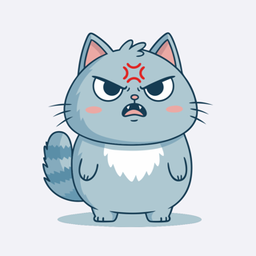
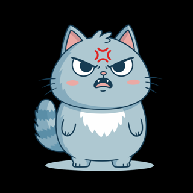
Drill sergeant
No sympathy, only repetitions.
Those are the avatar's own expressions, not stickers — it reacts in character while you talk. Switchable at any time in Settings → Learning; the livelier three ask for a confirmation first, because they are exactly as pointed as they sound.
The report after each session
-
Scored four ways
An overall mark plus grammar, vocabulary, pronunciation and listening — with what you did well and the specific things to fix next.
-
Words you didn't know
Pulled out of your own sentences with translations and part of speech, and added straight to the deck. It also estimates your vocabulary size.
-
Trends over time
Speaking pace and sentence complexity tracked across sessions, computed locally from stored metrics rather than asked of a model.
-
Things to watch and read
Two to four real YouTube channels, series, podcasts, books or songs per session, aimed at that session's weak spots. It never invents a URL — it hands you a search.
-
Switch off what you don't read
Every optional block of the report has a toggle, and turning one off drops it from the prompt — so it isn't generated, and isn't paid for.
-
Grade with a different brain
Chat offline but have the report graded in the cloud, or the reverse — and pin individual sections to either. Split runs fire concurrently, so you wait for the slower one, not both.
The report streams in: scores appear first, missions keep generating in the background, and a Continue button lets you leave without waiting.
Vocabulary
-
A deck that schedules itself
FSRS spaced repetition with the four familiar grades. Cards arrive from conversations automatically, or you add them by hand.
-
Bring decks you already have
Anki
.apkg, CSV, TSV, Excel and JSON, with column mapping and a live preview. Quizlet exports come in through the TSV preset. -
Prep for something specific
About to watch a film, read an article or play a game? Name it and you get the words and phrases you'll need, saved as their own group.
-
Answers graded by meaning
Review checks whether your guess means the right thing, not whether it matches character for character.
-
A word a day, and reminders
Notifications from your own deck, worded in the voice of the tutor style you picked — fifteen variants each, so they don't get stale.
-
A language per time of day
Learning more than one? Set windows — German on weekday mornings, Italian in the evenings — and the app switches for you. Reminders can be turned on per language, not just globally.
-
Generate a set on a topic
Ask for vocabulary on anything and it writes the cards: word, translation, an example sentence, the same sentence with a gap, and every inflected form that should count as correct.
-
Words you already know
Mark them once and they're excluded from generated lists for good, so you stop being taught things you learned years ago.
-
Phrases and groups, not just words
Multi-word expressions are their own kind of entry, and everything can be filed into groups — a deck per film, per trip, per topic.
Five ways to drill a deck
Vocabulary practice isn't only flashcards. The same words feed five different exercises, and three of them are written for you on the spot.
-
Practice with AI
A conversation steered deliberately at the words you're behind on, so you have to actually use them.
-
Flashcards
Fill the word into a sentence rather than flipping a card, then grade yourself — Again, Hard, Good or Easy, with the next interval shown on each button.
-
Story
A short passage written around your words at your level, with tap-to-look-up on every line and comprehension questions at the end. Pick how long it should be.
-
Inflection
Conjugation and declension tables with the cells blanked out. Fill them in and each one turns green or red — graded on the device, not by a model.
-
Word Family
One root, all its derivations, each with a gloss and examples you can save individually — then fill-in-the-blank sentences that use them.
Bring your own key — three of them, if you like
There's no subscription and no middleman. You point the app at the providers you want, with your own keys, and you pay them directly at their prices — the app takes no cut and runs no server of its own. And it isn't one choice but three: the brain, the voice and the ear are configured separately, so you can spend where it matters and save where it doesn't.
🧠 Brain — the tutor
OpenAI or Gemini for live speech-to-speech. Or any OpenAI-compatible endpoint — OpenRouter, Groq, DeepSeek, Mistral — with your own base URL and model name. Or nothing at all, on-device.
🔊 Voice — what you hear
The free iOS system voice, OpenAI TTS, Gemini TTS or Fish Audio S2. Preview any of them before committing, and decide whether it's used in live dialogue.
👂 Speech — hearing you
WhisperKit or Apple's recogniser on the device, or OpenAI Whisper, Gemini Audio or Groq Whisper in the cloud when you want the accuracy.
A settings screen shows which combination is actually live right now, since a pick that can't run — no key, no network, nothing downloaded — quietly falls back rather than failing. Keys live in the iOS Keychain, encrypted and tied to that one device, and are only ever sent to the provider you chose.
Or no key at all
Offline mode replaces every cloud piece with one that runs on the phone, and there are two ways to get there. Either downloads once and then costs nothing, forever, with aeroplane mode on.
Downloaded models
Gemma 4 E2B as the tutor, WhisperKit for hearing you, Supertonic 3 for a natural neural voice in 31 languages. About 3 GB, works on any supported iPhone.
Apple Intelligence
Uses the model already on the phone — nothing to download. Newer hardware and iOS only, and Apple's own language list is shorter, so it isn't offered where it wouldn't work.
- Text conversation
- The session report
- Mission generation
- Spaced-repetition review
- Word bank & imports
- Reminders
- Every settings screen
What's weaker: voice becomes turn-based, so you can't cut the tutor off mid-sentence, and a small on-device model is coarser than a cloud one at grading and at drills. The CEFR verdict is deliberately distrusted offline — it records what it observed but won't move your level. Watch and read recommendations are cloud-only, because a 2B model cheerfully invents books that don't exist.
And the rest of it
-
Every session kept
Full transcripts you can reread, with the same tap-to-look-up actions on any line you didn't understand at the time.
-
Goals in your own words
Why you're learning comes up in conversation rather than a form, and what you said gets saved and fed back into later sessions. Editable whenever.
-
Grammar focus
The rules you're working on, tracked as their own list and passed to the tutor so it keeps steering you into them.
-
Progress worth looking at
Sessions, minutes spoken, words collected and words actually learned, plus what's due for review today.
-
Several languages at once
Each one keeps its own level, deck, missions and history. Add and remove them without disturbing the others.
-
Deletion that means it
Start one language over, remove it entirely, or erase everything — optionally including your API keys and the downloaded models. Each spelled out before you confirm.
-
Skills broken out
The dashboard tracks pronunciation, grammar and listening comprehension separately, next to your goals, current missions and grammar focus.
-
Retake the level test
Think it pitched you wrong, or come back after months away? Reopen the assessment from settings and let it re-judge.
There's also a diagnostics export for when something misbehaves, and a live log viewer if you like watching the machinery.
Where your data lives
On your phone. There is no account to create, no backend holding your transcripts, and no analytics — your conversations, vocabulary and progress are a local database, and deleting the app deletes them.
In cloud mode your side of the conversation is sent to the provider you picked, because that's how it answers you — subject to their terms, not mine. In offline mode nothing leaves the device at all.
Where it's at
Still in development and not on the App Store yet. It's usable day to day — that's what it's being built against — but expect rough edges, and expect things to move.
Needs an iPhone on iOS 17 or newer. Offline mode wants a recent one — the models are large and it holds several in memory at once.
Found a bug? Missing something?
Write to me. It's one person building this, so there's no ticket queue and no support desk — email lands directly and gets read.
If it's a bug, these make it fixable rather than guessable:
- What happened and what you expected, and what you did just before.
- App version and build — Settings → About shows both.
- Your device and iOS version, and whether you were in cloud or offline mode.
- The diagnostics export if the problem is hard to describe — Settings → About → Export diagnostic data. It stays on your phone until you attach it, and you can read it first.
Nothing is sent from the app itself. There's no crash reporter and no analytics, so a problem I'm not told about is one I don't know exists.